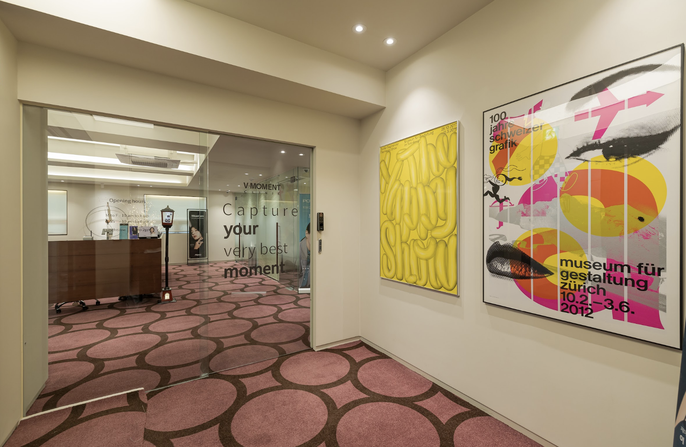
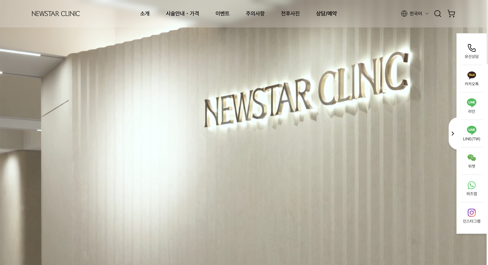

중국 신양의원 1호점~10호점 개원 컨설팅
브이모먼트의원 피부과 개원 컨설팅 ⋅ 국내 마케팅 운영

명동클림의원 피부과 개원 마케팅 운영
에디션의원 피부과 확장 개원 및 병원 운영 컨설팅
에디션의원은 자연스러운 아름다움을 추구하는 서울 강남 소재의 성형외과·피부과 의료기관입니다. 국내 고객뿐 아니라 해외 환자들의 방문 비중이 높은 의료기관으로, 프리미엄 의료 서비스와 섬세한 고객 응대를 기반으로 브랜드를 운영하고 있습니다. CMD는 에디션의원의 피부과 확장 개원 및 병원 운영 시스템 구축 프로젝트를 함께 진행하였습니다.
뉴스타의원 홈페이지 제작

셀런스의원 피부과 개원 컨설팅 ⋅ 홈페이지 제작 ⋅ 국내 마케팅 운영
진행 중